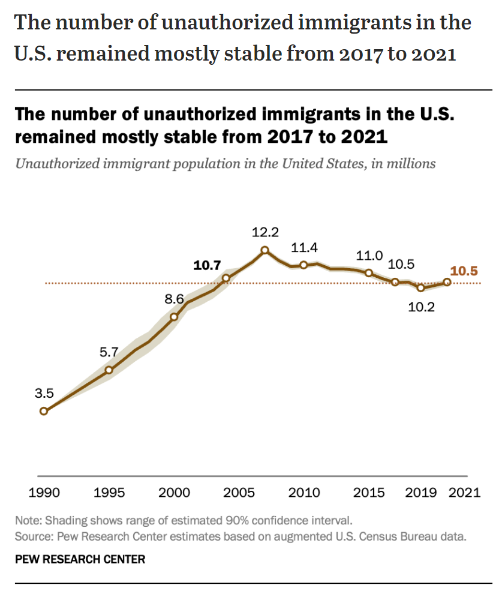

Sources
- The American Immigration Council
- How the United States Immigration System Works - September 14th, 2021
Involved Bodies
Domestic
- U.S. Citizenship and Immigration Services (USCIS)
- The U.S. Citizenship and Immigration Services (USCIS) is responsible for processing immigration and naturalization applications and establishing policies regarding immigration services.
- Department of Labor
- For employment visas.
International
- United Nations High Commissioner for Refugees (UNHCR)
- International Organization for Migration (IOM)
Relevant Policy
Legislation
- Immigration and Nationality Act of 1965 (Hart-Cellar Act)
- Facts
- Grants up to 675,000 permanent immigrant visas/year.
- No limit on U.S. citizens’ spouses, parents and children under 21. Doesn’t count towards the 675,000 permanent visas/year.
- Programs
- U.S. Refugee Admissions Program (USRAP)
- Attempts to resettle individuals with humanitarian protection needs who have left their country due to persecution on account of a protected ground, cannot return safely home, and need resettlement in a stable a third country.
- Refugee Definition: an individual who is outside their country of nationality, or if no nationality, their last habitual residence, and who is unable or unwilling to return to, and is unwilling or unable to avail themselves of the protection of, that country because of persecution or a well-founded fear of persecution on account of their race, religion, nationality, membership in a particular social group, or political opinion.
- Biden set the refugee admissions ceiling in FY 2024 at 125,000, the same as FY 2022.
- Since the passage of the Refugee Act in 1980, the United States has admitted more than 3.2 million refugees.
- U.S. Refugee Admissions Program (USRAP)
- Facts
- United States Refugee Act of 1980
- Immigration Act of 1990
- Nicaraguan Adjustment and Central American Relief Act of 1997
Execution Orders
- Deferred Action for Childhood Arrivals (DACA) (2012)
Supreme Court Decisions
- Plyler v. Doe (457 U.S. 1982)
- United States v. Texas (579 U.S. 2016)
Immigration Process
- Immigrant Categories
- Family-based visas
- All family-based visas are permanent.
- Limited to 480,000 (maximum number in principle) for all family based immigrants
- There is a complicated formula for establishing the number of family preference visas allocated for any given year.
- The number is determined by starting with 480,000 (the maximum number in principle allocated for all family-based immigrants) and then subtracting the number of immediate relative visas issued during the previous year and the number of aliens “paroled” into the United States during the previous year.6 Any unused employment preference immigrant numbers from the preceding year are then added to this total to establish the number of visas that are available for allocation through the family preference system.7 However, by law, the number of family-based visas allocated through the preference system may not be lower than 226,000. The number of immediate relatives often exceeds 250,000 in a given year and triggers the 226,000 minimum for preference visas
- In FY 2019, family-based immigrants comprised 68.8% of all new LPRs
- Petitioner requirements
- Establish the legitimacy of the relationship
- Meet minimum income requirements
- Sign an affidavit for financial support
- Relative requirements
- Medical exam
- Required vaccinations
- Analysis of any immigration or criminal history
- Demonstrate they will not become dependent on government
- The spouses and children who accompany or follow the principal immigrant sponsored by the U.S. citizen or LPR are derivative immigrants.
- These count towards the numerical caps for family visas.
- e.g. in FY 2019, 61,031 people were admitted in the category “brothers and sisters” of U.S. citizens, but only 22,179 of them were actual brothers or sisters of U.S. citizens. The rest were spouses (14,956) and children (23,896) of the siblings of U.S. citizens.
- These count towards the numerical caps for family visas.
- Types of family visas
- Visas restricted to immediate relatives
- Unlimited in number
- Immediate relatives:
- Spouses of U.S. citizens
- Unmarried minor children of U.S. citizens (under 21)
- Parents of U.S. citizens (petitioner must be at least 21 years)
- Visas for family preference system
- Limited in number
- Prospective immigrants need to meet eligibility criteria
- Petitioner must meet certain age and financial requirements
- Family preference system includes:
- Adult children (married and unmarried) and brothers/sisters of U.S. citizens (petitioner must be at least 21 years old to petition for sibling)
- Spouses and unmarried children (minor and adult) or LPRs
- Visas restricted to immediate relatives
- Employment-based visas
- Temporary work visas
- There are more than 20 types of non-immigrant visas for temporary work
- L-1 visas for intracompany transfers
- P visas for athletes, entertainers, and skilled performers
- R-1 visas for religious workers
- A visas for diplomatic employees
- O-1 visas for workers of extraordinary ability
- H visas for highly skilled and lesser-skilled workers
- In most cases these workers must leave the US if their status expires or they lose their job.
- Possible to become a LPR depending on type of visa.
- There are more than 20 types of non-immigrant visas for temporary work
- Permanent immigration 1. Limited to 140,000 per year 1. This number includes the immigrants spouses and minor unmarried children, making the actual number less. 2. Any unused family preference immigrant numbers from the preceding year are added to this cap. 3. Preferences for employment-based immigration 1. “Persons of extraordinary ability” in the arts, science, education, business, or athletics; outstanding professors and researchers, multinational executives and managers. - 40,040 2. Members of the professions holding advanced degrees, or persons of exceptional ability in the arts, science, or business. - 40,040 3. Skilled workers with at least two years of training or experience, professionals with college degrees, or “other” workers for unskilled labor that is not temporary or seasonal. - 40,040 4. Certain “special immigrants” including religious workers, employees of U.S. foreign service posts, former U.S. government employees and other classes of foreign nationals. - 9,940 5. Persons who will invest 1 million in a job-creating enterprise that employs at least 10 full time U.S. workers. For petitions filed on or after 11/21/2019 the investment amounts increase to 1.8 million, with future increases at specified intervals. - 9,940 4. In FY 2019, economy immigrants made up 13.5% of all new LPRs in the U.S.
- Per Country Ceilings
- No group of permanent immigrants (family and employment based combined) from a single country can exceed seven percent of the total number of people immigrating to the US in a single fiscal year.
- Temporary work visas
- Refugees and Asylum Seekers
- Refugees
- Refugees need a “well-founded fear of persecution” due to race, membership in a particular social group, political opinion, religion, or national origin.
- They apply for admission from outside of the U.S. from a transition country that is outside their home country.
- Factors that determine acceptance:
- Degree of risk they face
- Membership in a group of special concern to the U.S. (designated yearly by Congress/the president)
- Whether they have family members in the U.S.
- Each year, the president and Congress set the cap for refugee admissions, broken down into limits for each region of the world.
- Asylees
- Available to persons already in the U.S.
- Based on the same five protected grounds for refugees
- They can apply at a port of entry at the time they seek admission or within one year of arriving in the U.S.
- There are no limits on the number of individuals who may be granted asylum each year, nor are there categorical limitations.
- In FY 2019, 46,508 individuals were granted asylum.
- Both are eligible to become LPRs one year after admission to the U.S. as a refugee or after receiving asylum.
- Refugees
- The Diversity Visa Program
- Created by the Immigration Act of 1990 for immigrants from countries with low migration rates to the U.S.
- 55,000 visas/years are randomly allocated through a computer-generated lottery to nationals from countries that have sent fewer than 50,000 immigrants to the US in the previous five years.
- 5,000 are made available for use under the Nicaraguan Adjustment and Central American Relief Act program.
- Originally intended to favor Irish immigrants, with 40% of the visas exclusively allocated to the Irish during the first three years of the program.
- Eligibility
- At least a high school education (or equivalent) or, within the past five years, a minimum of two years working in a profession requiring at least two years of training or experience.
- Spouses and minor unmarried children may also enter as derivatives.
- Immigration bans implemented by the Trump admin effectively shut down the program in 2020. It has resumed under the Biden admin, but at a very slow rate.
- Family-based visas
- Other Forms of Humanitarian Relief (temporary in nature)
- Temporary Protected Status (TPS)
- Granted to those in the U.S. who cannot return to their home country due to “natural disaster”, “extraordinary temporary conditions” or “ongoing armed conflict.”
- Granted for 6, 12 or 18 months, but can be extended if unsafe conditions persist.
- Authorized by statute.
- According to the CRS, as of September 30th, 2023, there are approximately 697,530 foreign nationals living in the US protected by the TPS.
- Deferred Enforced Departure (DED)
- Provides protection from deportation for individuals whose home countries are unstable, making their return dangerous.
- Executive discretion coming from president’s constitutional authority regarding foreign relations. Art II.S1.C1.8 of the U.S. Constitution
- First used in 1990 (referred to then as extended voluntary departure, or EVD), and has been used five times since (as of 2018) - Temporary Protected Status: Overview and Current Issues - October 10th, 2018, Congressional Research Service
- Deferred Action for Childhood Arrivals
- Established in 2012.
- For individuals who:
- were brought to the U.S. while under 16
- continuously resided in the U.S. since June 15th, 2007
- have no significant criminal record
- It allows you to remain in the U.S. and work lawfully for at least two years if you have graduated high school or college or received a degree equivalent.
- Requires renewal every 2 years.
- Trump’s administration attempted to end DACA in 2017, but in June 2020 the Supreme Court ruled this attempt unlawful.
- DACA acceptance is currently on hold after a federal judge in Texas ruled it unlawful, though the federal government is still accepting applications.
- Humanitarian parole allows certain individuals who don’t meet the refugee definition or have other means to immigrate to the US to enter the US temporarily for urgent humanitarian reasons or significant public benefit.
- Temporary Protected Status (TPS)
- Requirements for Citizenship
- Become a lawful permanent resident (LPR) (Green Card)
- Can apply for nearly all jobs
- Can remain in country permanently, even if unemployed
- Can apply for U.S. citizenship after remaining in the country for five years (or three years in some cases, such as obtaining LPR through US-citizen spouse or through the Violence Against Women Act)
- Must be at least 18 years old.
- Demonstrate continuous residency.
- Demonstrate “good moral character.”
- Pass English and U.S. history and civics exams (with certain exceptions)
- Pay an application fee.
- Possible other requirements my apply.
- Become a lawful permanent resident (LPR) (Green Card)
- Non-immigrant visa
- Types
- Tourism
- Students
- Temporary workers
- Can file adjustment of status to become a LPR
- Types
Immigration Goals
- The reunification of families
- Admitting immigrants with skills that are valuable to the U.S. economy
- Protecting refugees
- Promoting diversity
Economics
- The foreign-born population tend to participate in the labor force at higher rates than natives. In 2021 the BLS reported that the foreign-born LFP rate was 64.7% compared to 61% for the native-born.
Political Impact
Culture
Crime
- Crimes rates seem to be higher for native born US citizens, even white US born citizens, than any other class of immigrants coming into the United States. This is especially due to white US-born men with no education having an incredibly high tendency to commit crime, something that poor and uneducated immigrants appear to be shielded from.
LAW-ABIDING IMMIGRANTS: THE INCARCERATION GAP BETWEEN IMMIGRANTS AND THE US-BORN, 1870–2020
We construct the first nationally representative series of immigrant-US-born incarceration gaps from 1870 until present day. We find that, as a group, immigrant men have had a lower incarceration rate than US-born men for the last 150 years of American history. The differences in incarceration have become more pronounced starting in 1960, with recent waves of immigrants being 50–60% less likely to be incarcerated than US-born men (30% when compared to US-born white men). This relative decline in incarceration has occurred among immigrants from all major countries of origin, and it cannot be explained by changes in immigrants’ observable characteristics or in immigration policies. Moreover, we show that the divergence in outcomes between less-educated immigrants and US-born men occurred along dimensions beyond incarceration, including labor force participation and family formation rates
- Ran Abramitzky et al.
- NBER Working Paper
- July 2023, Revised March 2024
Illegal Immigration
Types of Illegal Immigration
- Three main types of unauthorized immigrants.
- Migrants who enter the United States without inspection.
- Migrants who overstay a period of lawful admission (overstays).
- Migrants who violated the terms of their admission.
- While the majority of the total unauthorized population are people who entered without inspection, in recent years overstays have accounted for the majority of the newly unauthorized population. For example, an analysis of unauthorized migration from 2010 to 2017 found that the majority of individuals who became unauthorized during that period were overstays. An estimated 46% of the total unauthorized population in 2017 were overstays. The proportion of overstays has increased primarily because EWIs began to decline after 2000.
Number of Illegal Immigrants
Table from Unauthorized Immigrants: Frequently Asked Questions, Congressional Research Service, August 10th, 2022
| Estimate Source | Estimate | Year | Data Source(s) |
|---|---|---|---|
| Center for Immigration Studies | 11.35 million | 2022 | Current Population Survey (CPS); DHS and other administrative data |
| Center for Migration Studies New York | 10.3 million | 2019 | ACS; DHS administrative data |
| Congressional Budget Office | 11.0 million | 2018 | CPS; DHS administrative data |
| Migration Policy Institute | 11.0 million | 2019 | ACS; Survey of Income Participation; DHS administrative data |
| Pew Research Center | 10.5 million | 2017 | ACS; DHS administrative data |
| U.S. Department of Homeland Security | 11.4 million | 2018 | ACS; DHS and other administrative data |
Pew Research on Number of Illegal Immigrants in the US
Source - What we know about unauthorized immigrants living in the U.S. 
Eligibility for Federal/State aid
- Illegal immigrants are not eligible for most federal benefits, including non-emergency Medicaid, the Supplemental Nutrition Assistance Program (SNAP), Supplemental Security Income (SSI), Temporary Assistance for Needy Families (TANF), and most housing assistance programs.
- Illegal immigrants are eligible for: emergency Medicaid, short-term, in-kind disaster relief, immunization against and treatment for communicable diseases, and other random programs designated by Title IV of the Personal Responsibility and Work Opportunity Reconciliation Act of 1996.
- Illegal immigrants are not eligible for federal student aid. Some states or local areas may provide student aid, based on their local rules.
- As of 2021, illegal immigrants are eligible for driver’s licenses in 16 states, DC, and Puerto Rico.
- Illegal immigrants should not be able to be granted a REAL ID, due to federal requirements of status verification.
Work Authorization
- Illegal immigrants generally are not eligible to apply for work authorization. Some cases are exceptions to this, e.g. DACA, TPS, DED or asylum seeking immigrants after 150 days from filing for asylum.
Voting/Military Service
- Only U.S. citizens are allowed to vote in federal elections. Noncitizens may vote in non-federal elections as authorized by states and localities.
- Illegal immigrants are not generally allowed to service in the military.
Economics
- Illegal immigrants have higher LFP rates than native or foreign-born populations, with 2019 estimates ranging from 69%-77%.
- Illegal immigrants tend to work in certain industries, such as agriculture, construction, leisure/hospitality, services, and manufacturing.
- Department of Labor survey of U.S. farmworkers in FY2019-FY2020 found that 44% of hired crop workers were unauthorized.
- A 2017 summary report by the National Academies of Sciences, Engineering and Medicine claim that measuring illegal immigrant impact on wages is difficult. If wages are negatively impacted, it’s most likely concentrated on low skill jobs where illegal immigrants are competing directly with natives or recent immigrants, especially among those with no job skills and only some high school (or less) education.
- According to the same NASEM summary, it’s hard to determine the exact fiscal impact of illegal immigrants. It’s possible they could overconsume on state/local budgets for things like school, while under-consuming on federal budgets since they are generally of working age but aren’t eligible for most federal benefits.
- The IRS and the Treasury Inspector General for Tax Administration believe that a large proportion of Individual Taxpayer Identification Number filers are illegal immigrants working in the US.
Crime
- Illegal immigrants seem to commit less crime than native or legal foreign-born populations.
- Research done by Michael T. Light et al., Undocumented Immigration, Drug Problems, and Driving Under the Influence in the United States, 1990–2014 (published in 2017 in the American Journal of Public Health), finds that “increased undocumented immigration was significantly associated with reductions in drug arrests, drug overdose deaths, and DUI arrests, net of other factors. There was no significant relationship between increased undocumented immigration and DUI deaths.”
- In another study by Michael T. Light and T Y Miller, DOES UNDOCUMENTED IMMIGRATION INCREASE VIOLENT CRIME? (published in 2017 in Criminology), finds “the results from fixed-effects regression models reveal that undocumented immigration does not increase violence. Rather, the relationship between undocumented immigration and violent crime is generally negative, although not significant in all specifications.”
Pathway to Permanent Status
- Those who have entered the country illegally cannot adjust to LPR status since they have not been admitted legally into the US.
- Those who overstay visas or have otherwise failed to maintain their lawful status since entering the US are also ineligible for status adjustment.
- Some LPR pathways are available if you are seeking asylum.
Random Facts
- Illegal immigrants represent ~23%-26% of the 44.1 million foreign-born people living in the US.
- The number of illegal immigrants in the US likely peaked in 2007, and the population has since either declined or stabilized.
- Categories of illegal immigrants who have protected status against deportation. These categories are counted for illegal immigrants.
- Deferred Action for Childhood Arrivals (DACA)
- As of March 2022, there were approximately 611,270 active DACA recipients.
- Temporary Protected Status (TPS)
- As of February 2022, 354,625 individuals from 12 countries had TPS.
- Deferred Enforced Departure (DED)
- Certain Liberians and residents of Hong Kong present in the United States currently maintain relief under DED.
- Individuals covered by DED are not required to register for the status with USCIS unless they are applying for work authorization. As a result, USCIS does not maintain data on the total population covered by DED
- Deferred Action for Childhood Arrivals (DACA)
- As of 2019, ~60% of illegal immigrants had lived in the US for at least a decade. ~22% had lived in the US for 20 years or more. ~23% had lived in the US for fewer than 5 years.
- As of 2019, ~45% of illegal immigrants aged 15+ were married, with 41% of those having an LPT or citizen spouse. About 41% of unauthorized immigrants ages 15+ lived with at least one child under 18. 81% of this group lived with at least one child who was a US citizen. 5.2 million children under 18 (7% of the total US child population) lived with at least one illegal immigrant parent, with 85% of those children being US citizens.
- Non-citizens who stay in the US illegally for 6-12 months are inadmissible into the US for 3 years, and those unlawfully present for more than 1 year are inadmissible for 10 years.
- Waivers are available for those who are the spouse, son, or daughter of a U.S. citizen or LPR if “refusal of admission to such immigrant alien would result in extreme hardship to the citizen or lawfully resident spouse or parent of such alien.
- An estimated 9.2 million LPRs are eligible for naturalization but have not done so.
Removal
- Noncitizens may be removed through different processes, including the following
- when an immigration judge issues an order of removal during formal removal proceedings
- under expedited removal, in which arriving aliens100 and migrants who recently entered the United States without inspection may be removed by DHS without formal proceedings in immigration court
- under reinstatement of final removal orders for noncitizens who have re-entered the United States without authorization after a previous removal or voluntary departure
- under administrative removal for noncitizens convicted of an aggravated felony who did not have LPR status when their removal proceedings commenced.
- The removal process begins when noncitizens are issued a Notice to Appear (NTA) charging document and it is filed with an immigration court.
- As of June 2022, ~1.8 million noncitizens were in removal proceedings in immigrations, a large percentage of whom were illegal immigrants.
- ~1.1million were charged with entry without inspection, and 663,000 were charged with another immigration infraction.
- Nationwide Illegal Alien Apprehensions FY 1925-2019 from the US Border Patrol
- Bloomberg opinion piece by Justin Fox, March 20th, 2024 “Illegal US Border Crossings Aren’t Really Breaking Records”
- Asylum seeking illegals are unique and overwhelming current the US immigration courts.
Border Security
Ellis Island
Current Events
- How to Fix America’s Immigration Crisis January 9th, 2024, by Steven Rattner and Maureen White